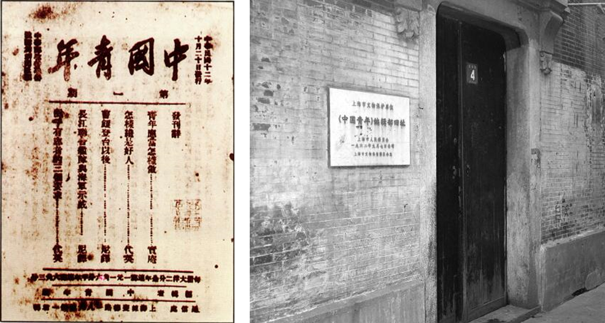
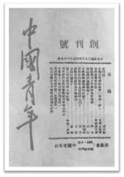

东南大学仪器科学与工程学院 寻迹梅庵实践团
官方微信
官方微博
寻 迹 梅 庵 ，薪 火 相 传
1923年8月24日，“团二大”第七次会议议决出版《中国青年》周刊，以对学生宣传。1923年10月20日，中国社会主义青年团机关刊《中国青年》在上海创刊。
《中国青年》与编辑部旧址
杰出的中国共产党人、早期中国青年运动卓越的领导者恽代英是《中国青年》第一任主编。著名的革命先驱萧楚女是《中国青年》的创始人之一。林育南、邓中夏、张太雷、李求实等早期青年运动领导人都曾是《中国青年》的主要撰稿人。
左起依次为恽代英、萧楚女、林育南、张太雷
1924年10月18日，任弼时在《中国青年》第49期发表《“社会主义青年团”是什么？》一文，驳斥国民党右派对中国社会主义青年团的攻击
1939年4月16日，《中国青年》在延安复刊，毛泽东第一次为《中国青年》题写刊名。延安时期的《中国青年》在宣传当代抗日主张，动员青年参加抗战，推动中国青年运动等方面起了积极作用。
1939年《中国青年》在延安复刊，毛泽东第一次为《中国青年》题写刊名
《中国青年》至今仍是团的重要宣传阵地，是我国现存历史最悠久的杂志，也是共青团中央主管主办的历史最长的红色媒体，被誉为青年前进中的“良师益友”，斗争中的“精神食粮”。